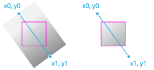

{{APIRef}}
The CanvasRenderingContext2D.createLinearGradient() method of the Canvas 2D API creates a gradient along the line connecting two given coordinates.

This method returns a linear {{domxref(“CanvasGradient”)}}. To be applied to a shape, the gradient must first be assigned to the {{domxref(“CanvasRenderingContext2D.fillStyle”, “fillStyle”)}} or {{domxref(“CanvasRenderingContext2D.strokeStyle”, “strokeStyle”)}} properties.
Note: Gradient coordinates are global, i.e., relative to the current coordinate space. When applied to a shape, the coordinates are NOT relative to the shape’s coordinates.
The createLinearGradient() method is specified by four parameters defining the start and end points of the gradient line.
x0
y0
x1
y1
CanvasGradient initialized with the specified line.This example initializes a linear gradient using the createLinearGradient() method. Three color stops between the gradient’s start and end points are then created. Finally, the gradient is assigned to the canvas context, and is rendered to a filled rectangle.
var canvas = document.getElementById('canvas');
var ctx = canvas.getContext('2d');
// Create a linear gradient
// The start gradient point is at x=20, y=0
// The end gradient point is at x=220, y=0
var gradient = ctx.createLinearGradient(20,0, 220,0);
// Add three color stops
gradient.addColorStop(0, 'green');
gradient.addColorStop(.5, 'cyan');
gradient.addColorStop(1, 'green');
// Set the fill style and draw a rectangle
ctx.fillStyle = gradient;
ctx.fillRect(20, 20, 200, 100);{{ EmbedLiveSample(‘Filling_a_rectangle_with_a_linear_gradient’, 700, 180) }}
{{Specifications}}
{{Compat}}
NOT_SUPPORTED_ERR instead of SYNTAX_ERR.